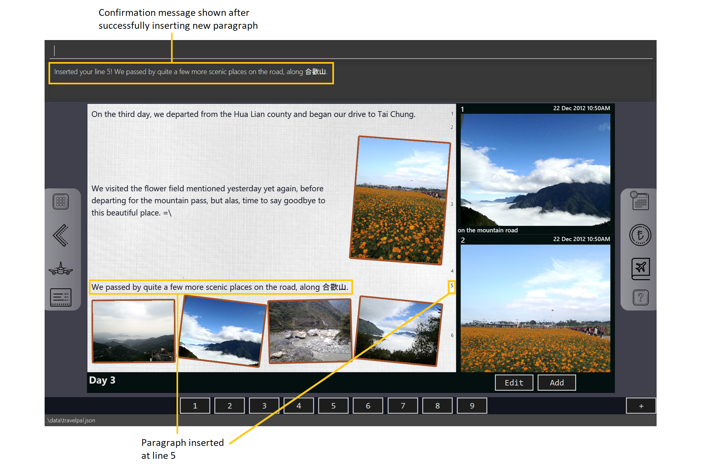

By: Team 11-4 Since: In Development Licence: None
1. Introduction
What is TravelPal? First and foremost, it is a cross-platform desktop application for those who love to plan and micromanage their travels. It includes various features to help in planning the trip beforehand, such as an itinerary planner, a pre-trip inventory manager, bookings and expense manager.
During the trip, there is also an inbuilt diary application that allows the user to record details of the trip, and a contacts manager to store important contacts related to the trip.
In addition, it’s primary preferred form of input from the user is the Command Line Interface (CLI), but it also provides a Graphical User Interface (GUI) for those who like to use alternative inputs.
Jump to the Section 2, “Quick Start” to get started!
2. Quick Start
-
Ensure you have Java
11or above installed in your Computer. -
Download the latest
addressbook.jarhere. -
Copy the file to the folder you want to use as the home folder for your Address Book.
-
Double-click the file to start the app. The GUI should appear in a few seconds.

-
Type the command in the command box and press Enter to execute it.
e.g. typinghelpand pressing Enter will open the help window. -
Some example commands you can try:
-
list: lists all contacts -
addn/John Doe p/98765432 e/johnd@example.com a/John street, block 123, #01-01: adds a contact namedJohn Doeto the Address Book. -
delete3: deletes the 3rd contact shown in the current list -
exit: exits the app
-
-
Refer to Section 3, “Features” for details of each command.
3. Features
General Command tips
-
Most commands are in the format of
<command> <argument1> <argument2> <…> -
<command>is case insensitive, so typing it in any combination of UPPER_CASE or lower_case will work. -
Leading and trailing white spaces in the inputted command are ignored.
-
Some
<arguments>consists of two parts, namely aprefix/followed immediately by anargument-
prefix/s are a combination of no more than three letters, followed by a/, and are case sensitive
-
3.1. User preferences
Entering the preferences screen
If you want to edit various user interface settings, you can start by typing
the command prefs to enter the preferences screen.
Changing preferences
Using the edit <field><value> command
-
Usage:
<field>is the field you want to edit as shown in the interface, and<value>is the respective value for the field, as detailed below. -
Arguments (
<field>):-
ww/- The width of the TravelPal application window, which’s<value>should be a positive number -
wh/- The height of the TravelPal application window, which’s<value>should be a positive number -
wx/- The x position of the TravelPal application window, which’s<value>should be a positive number -
wy/- The y position of the TravelPal application window, which’s<value>should be a positive number -
lg/- Whether the gui settings should be locked, which’s<value>should be eithertfor true, orffor false. -
fp/- The file path to a existing writable file.
-
Using the user interface text fields
-
Usage: Clicking on the text fields and editing them will also change the values of those fields, with the same constraints as noted above.
Returning to the trip manager and saving preferences
Using the done command
Usage: Saves your changes to the preferences and returns you to the trip manager
Returning to the trip manager and discarding changes
Using the cancel command
Usage: Discards your changes to the preferences and returns you to the trip manager
3.2. Trip manager
The trip manager is the main starting ground of the application. Here, the user is able to create and delete trips.
-
create : creates a new trip, this command brings up the trip creation user interface.
-
delete <name of trip>: deletes the trip with the specified name and all data associated with it.
-
goto <index of trip> : enters the main page of a trip with the specified index.
3.3. Trip setup
Trip setup is the first page in configuring a new/existing task. Upon commands to create or edit a specified trip from the Trip Manager, the user will be directed to a page where they can edit the necessary details to create a new trip. This page will contain a form with 2 necessary fields:
-
Duration (Starting date, Ending date)
-
Destination
-
edit -startDate <starting Date> -endDate <ending Date>: sets the starting date and ending date of the trip being created/edited
-
edit -dest <destination>: sets the destination of the trip being created/edited
-
edit -addDay <name of day>: adds a day after the last day previously added. If no days were previously added, add the first day
-
3.4. Event Setup
Event setup creates/edits properties of a specified event.
-
edit -id <id of trip> -day <index of day> -event <index of event> -name <name of event>: sets the name of the event
-
edit -id <id of trip> -day <index of day> -event <index of event> -description <description of event>: sets the description of the event
-
edit -id <id of trip> -day <index of day> -event <index of event> -startDate <starting time>: sets the starting time of the event
-
edit -id <id of trip> -day <index of day> -event <index of event> -endingTime <ending time>: sets the ending time of the event
-
edit -id <id of trip> -day <index of day> -event <index of event> -expenditure: sets the current known expenditure for a single event
3.5. Itinerary
itinerary contains commands to view the list of relevant event/day/trips. The order can be changed by using different commands
-
list -id <id of trip>: Lists the days of a trip in chronological order
-
list -d <id of trip> -day <index of day>: Lists the events of a day chronological order
Additional tags: * byExpenses: list all elements by expenses, from highest to lowest * byAlphabetical: list all elements by the alphabetical order of their names
3.6. Expense Manager
Expense manager records the expenditure by the user. Expenses are connected to bookings/events to automatically update the current known expenditure for any date/trip/event. There are two types of expenditure: 1. Planned expenditure (auto-generated from event) 2. Miscellaneous expenditure (can be created and deleted)
-
create: creates a miscellaneous expenditure
-
edit <index of expenditure>: edit an expenditure, this command bring up the expense setup page.
-
delete <index of expenditure>: delete an expenditure, note that only miscellaneous expenditures can be deleted.
-
showdays: enter the days view of expense manager, the expenditures will be grouped according to the days they belong to.
-
currency: enter the currency page of TravelPal
3.7. Expense Setup
Expense setup creates/edits properties of a specified expenditure.It is necessary for expenditure to contains a name and amount. It can also contain an optional day number, indicating which day the expenditure belong to.
-
edit n/<name of expenditure>: edit the name of the expenditure.
-
edit b/<amount of expenditure>: edit the amount of expenditure, in Singapore dollars.
-
edit dn/<day number of expenditure>: set the day number the expenditure belongs to.
-
done: confirm and commit the changes, go back to the expense manager page.
-
cancel: go back to the expense manager page without committing the changes.
3.8. Currency Manager
Currency manager allows users to create customised currencies with currency name, symbol and exchange rate (use Singapore dollar as base).
-
select <index of currency>: select the currency with the specified index as the currency in use.
-
delete <index of currency>: select the currency with the specified index, note that the default Singapore dollar cannot be deleted.
-
edit n/<name of currency>: edit the name of the currency.
-
edit r/<exchange rate of currency>: edit the name of the currency, using Singapore dollar as base for comparison.
-
edit s/<symbol of expenditure>: edit the symbol for the currency which will be displayed.
-
done: confirm and commit the changes, the newly added currency will be chosen as the currency in use, displayed in the currency list
-
cancel: return to the expense manager.
3.9. Diary
3.9.1. Introduction
Welcome to the diary feature of TravelPal! The diary allows you to key in various thoughts and add photos that tie to each day of the trip. It offers a selection of formatting choices for your text display, and has an additional gallery display to the right that allows you to take a glance at all your photos quickly. Moreover, for almost every command, there are gui alternatives that allow you to execute the same operations.
This section of the user guide explains how to use the diary.
3.9.2. Diary User Interface Overview
Shown below are the key elements of the diary page, while the gallery is in view.
There is an alternative mode of display (which will be touched on shortly, or see Section 3.9.3, “Diary Editor User Interface”),
that shows when you execute the editor command Section 3.9.5.9, “Showing the edit box” or click the Edit button.
|

Diary Entry Display Area
This is the main display area of your diary entry. It is able to display text, along with inline images, or just lines of images. The content is generated from the diary text of the entry (Section 3.9.4, “Diary Text”).
Gallery Display
The gallery allows you to browse through your stored photos. You can scroll the list simply with your mouse wheel.

Each image is displayed with a description (bottom left), a date taken (top right), both of which are user specifiable. There is also a photo index (top left), which is for use in various commands (see Section 3.9.4.2, “Displaying images”).
Current Day Indicator
This is simply some helper text for you to know what day the diary entry you are currently viewing is tied to.
Diary Day Navigation Bar
This is the button equivalent of the flip command (Section 3.9.5.2, “Navigating to a diary entry”), and allows you to navigate between your
diary entries for different days by clicking on the respective buttons.
Gallery Button Bar
This smaller button bar is used for executing two other commands. Firstly, the editor (Section 3.9.5.9, “Showing the edit box”)
can be executede by clicking on the Edit button. Secondly, the addphoto command may be executed
(Section 3.9.5.3, “Adding a photo”) through Add button.
Add New Entry Button
Similarly, this button executes the create command through the user interface, as described in Section 3.9.5.1, “Creating a diary entry”.
3.9.3. Diary Editor User Interface
This is the screen that shows when the editor command (Section 3.9.5.9, “Showing the edit box”) is executed or the Edit button
is clicked, as mentioned in Section 3.9.2.5, “Gallery Button Bar”.
Components not highlighted in Figure 3, “Overview of diary user interface when the edit box is shown” below function the same way as mentioned in Section 3.9.2, “Diary User Interface Overview”.

Diary Edit Box
This is the text edit area that allows a convenient form of alternative input to commands for editing the Diary Entry. While you may feel that the special clauses "<images 2>" and "<images 5 1 3 4>" being used in the diagram above are rather unfamiliar, they are actually quite simple! (see Section 3.9.4, “Diary Text”).
For the command line input savvy users, you can use the F1 accelerator to quickly move your keyboard focus
back to the command line input!
|
Commit Edit Button
This is simply the button-equivalent of the done command (Section 3.9.5.10, “Committing your edits”), and allows you to commit the
changes you made (either through commands, or directly in the edit box) while the edit box was open.
3.9.4. Diary Text
The diary text, as you edit in the edit box (Section 3.9.3.1, “Diary Edit Box”), or edit through the commands described in [Diary Commands], are one and the same diary text! Hence, any commands you input to edit the text are reflected into the edit box automatically, and any edits you make to the edit box are considered by the commands.
The diary text consists of paragraphs, which are simply texts separated by new line / return characters.
| A paragraph of text need not span a minimum length, and can even be empty, as seen in the empty orange boxes in Figure 4, “Annotated highlights of paragraphs and their line numbers with alternating colours” |
Additionally, the diary text can use special clauses to display and format images, as described in Section 3.9.4.2, “Displaying images”.
Diary Text Line Numbering
Each paragraph of text as seen in the edit box or diary entry display (with optional accompanying image(s)) is tied to a specific line number. This line number is simply determined by the order of the text paragraphs as shown in Figure 4, “Annotated highlights of paragraphs and their line numbers with alternating colours”, from top to bottom.

This line number is used for several commands described in [Diary Commands].
| It is trivial if using the edit box to edit text, as text editing is done directly on the diary text. |
Displaying images
There are currently two main formats in which you can display images inside the diary entry display.
Both of them use simple clauses that require the numbering of the photo as displayed in the gallery.
As a mini horizontal gallery of images.
-
Format: Use a diary text paragraph consisting of only the clause
<images number1 number2 numberN>, wherenumberNis the index of the photo as displayed in the gallery (Section 3.9.2.2, “Gallery Display”). -
Example:
<images 5 1 3 4>- displays a mini gallery with the images 1, 3 and 5 as shown in the gallery.

As an inline image with an accompanying paragraph of text.
-
Format: Use a diary text paragraph consisting of your desired text, along with the clause
<images numberN>, wherenumberNis the index of the photo as displayed in the gallery Section 3.9.2.2, “Gallery Display”. -
By default, the clause will place the image on the right, and the text on the left. You can include the
'left'word inside the<images left numberN>clause as such to reverse the order. -
Sample usage:
3.9.5. Diary Operations
The diary commands follow the same general format used by the rest of TravelPal.
Creating a diary entry
To start, you would want to create a new diary entry for a certain day. There are two options,
the former being the create command which offers slightly more flexibility.
Using the create <dayN> command
-
Usage: Creates a new diary entry for any specified day number.
-
Arguments:
-
<dayN>- Positive integer nth day of the trip, which has not yet been created.
-
Using the add entry button +
-
Usage: Creates a new diary entry for the day right after the latest day’s entry you currently have.
Example Usage
Scenario: You already have entries for days 1 up to 8, and you want to create a new entry for day 9.
-
Type in the
create 9command in the command line input, then press enter, or simply click the+button as shown below.-
For the add entry button
+(Section 3.9.5.1.2, “Using the add entry button+”), since the current latest day’s entry is day 8, it would create an entry for the day right after that, which is day 9.Figure 5. Example usage of creating a new diary entry for day 9
-
-
That’s it! the diary entry will be successfully created, and you will be brought to the new diary entry’s screen without having to navigate to it via Section 3.9.5.2, “Navigating to a diary entry” automatically.
-
The edit box will also be opened automatically, as shown below, and you can start editing with it right away!
 Figure 6. Example result of post diary entry creation
Figure 6. Example result of post diary entry creation
-
Navigating to a diary entry
Next, say you wanted to view or edit a different day’s diary entry, be it during your trip, or long after the trip. There are also two options here to suit your needs, both offering the exact same functionality.
Using the flip <dayN> command
-
Usage: Flips the diary to the diary entry of the day number specified.
-
Arguments:
-
<dayN>- Positive integer of the nth day’s diary entry to flip to.
-
Using the diary entry navigation bar
-
Usage: Clicking the the button of with the day number of the diary entry in the navigation bar (Section 3.9.2.4, “Diary Day Navigation Bar”) will flip to the diary entry for that day.
Example Usage
Scenario: You are currently viewing the diary entry for day 9, which is empty, and you want to view the diary entry for day 3.
-
You should type in the
flip 3command in the command line input, then press enter, or click the navigation button3for day 3, as highlighted below. Figure 7. Example usage of flipping the diary to day 3’s diary entry
Figure 7. Example usage of flipping the diary to day 3’s diary entry -
That’s all! You will be brought to the entry for day 3, as shown below. You should see a brief confirmation message in the command result box, and that the current day indicator will update accordingly (Section 3.9.2.3, “Current Day Indicator”).
Adding a photo
If you have just created a fresh diary entry, and you’re wondering where to go next, then you may want to start by adding your photos to display in the gallery (Section 3.9.2.2, “Gallery Display”).
Here, there are 3 options for you to choose, the last option being the least flexible but also the fastest, if you are more comfortable with using the user interface than the command line input.
In all options, the image file chosen should be of the file types .jpg, .jpeg, or .png
| The image files are not copied to where your the TravelPal application file is. Instead, the absolute file path (see Section 5, “Glossary”) to the image file on your computer is stored! |
Using the addphoto command with the fp/ prefix
-
Usage: Typing in the command
addphoto fp/<file path> [d/<description>] [dts/<date taken>], with the arguments described below, will add the image file located at the specified file path on your computer to the gallery display. -
Arguments:
-
<file path>- Relative file path from the location of the TravelPal’s jar file, or an absolute file path. -
<description>(optional) - The description of the photo to be shown in the gallery, of maximum length 20. If left unspecified, the file name, truncated to the maximum length is used instead. -
<date taken>(optional) - The date taken of the photo, of the format d/M/yyyy HHmm. If left unspecified, the last modified date of the file is used instead.
-
Example Usage
Scenario:
-
You are currently viewing the diary entry for day 1, which is empty, and you want to add a new photo.
-
You are also a command line savvy user that loves and understands how to manually specify relative or absolute file paths (see Section 5, “Glossary”), hence you opted for this option, rather than Section 3.9.5.3.3, “Using the
addphotocommand with thefc/prefix” or [Using theaddbutton under the gallery display]. -
Also, you want to give the photo a custom description, but want to use the last modified date of the image file in your computer as the date taken for the photo. Shown below is an example of the photo on your computer you want to add,
snowymountains.jpg, that is located in the same place as the TravelPal application.

-
You should type in the
addphoto fp/snowymountains.jpg d/picturesque mountainscommand in the command line input, then press enter, or click the navigation button3for day 3, as highlighted below.-
Here, the relative
<file path>is simply the name of the file,snowymountains.jpg, since the image file is located in the same directory as the TravelPal application. Figure 10. Example usage of the
Figure 10. Example usage of theaddphotocommand with thefp/option
-
-
The photo, with the specified description and last modified date will be added. You should see a brief confirmation message in the command result box.
-
Additionally, there will be a auto-generated photo numbering, for use as described in Section 3.9.4.2, “Displaying images”.
-

addphoto command with the fp/ optionUsing the addphoto command with the fc/ prefix
-
Usage: Typing in the command
addphoto fc/ [d/<description>] [dts/<date taken>], with the arguments described below, will add the image file located at the specified file path on your computer to the gallery display. -
Arguments:
-
fc/- opens your system’s user interface dialog to allow choosing an image (of file types.jpg .jpeg .png). -
<description>&<date taken>(optional) - as described in Section 3.9.5.3.1, “Using theaddphotocommand with thefp/prefix”.
-
The fc/ prefix takes precedence over the fp/ argument if both are specified.
|
Using the Add button under the gallery display
-
Usage: Clicking the
Addbutton located under the gallery display area (Section 3.9.2.5, “Gallery Button Bar”) will open your system’s user interface dialog to choose an image file. -
If this option is used, then the
<description>&<date taken>are not specifiable and will be auto generated as described in Section 3.9.5.3.1, “Using theaddphotocommand with thefp/prefix”.
Example Usage for addphoto command with fc/ option or add button
Scenario:
-
You are currently viewing the diary entry for day 1, which is empty, and you want to add a new photo using your system’s file choosing user interface, leaving the application to generate the
<description>and<date taken>fields automatically. -
Also, the image file you want to add is
snowymountains.jpg, and is not located in the same place as the TravelPal application.-
You can type in the
addphoto fc/command in the command line input as highlighted in yellow below, and press the 'enter' key, or you can click theAddbutton.Figure 12. Example usage of adding a photo through theaddphotocommand using thefc/option, or theAddbutton
-
In this example, the <description> and <date taken> fields are automatically generated. However, if you are using
the addphoto fc/ command, you may specify them manually as described in Section 3.9.5.3.3, “Using the addphoto command with the fc/ prefix”
|
-
Your system’s file chooser user interface, which may look different depending on your operating system (windows / mac / linux) (see Section 5, “Glossary”) will be opened, as shown below.
 Figure 13. Example file chooser user interface for the windows operating system
Figure 13. Example file chooser user interface for the windows operating system -
Next, you can simply use the file chooser user interface to choose an image located anywhere on your computer!
 Figure 14. Example image file in the file chooser user interface to add
Figure 14. Example image file in the file chooser user interface to add -
That’s it! Your photo, with the auto generated image name and date will be placed into your gallery, and you will see a confirmation message in the result display.
-
Additionally, there will be a auto-generated photo numbering, for use as described in Section 3.9.4.2, “Displaying images”.
Figure 15. Result after choosing the image 'qidu_marketplace.jpg' in step 3
-
Deleting a photo
If you mistakenly added a photo to the wrong diary entry, or want to remove a certain photo from an entry, you can
use the delphoto command to do so.
====== Using the delphoto <photo number> command
* Usage: Deletes a photo, indicated by the specified photo number, as displayed by the photo’s numbering in the gallery.
* Arguments:
** <photo number> - Positive integer number of the photo to delete, as shown by the numbering in the gallery (see Section 3.9.2.2, “Gallery Display”).
Example Usage
Scenario: You mistakenly added the photo 'qidu_marketplace.jpg' to your diary entry for day 1 when it should have been added the day 2’s diary entry.
-
You type in the
delphoto 1command to delete the image with the same1numbering as shown in the gallery, and press the 'enter' key.Figure 16. Example usage ofdelphotocommand to delete the photo with number 1 -
Your photo will be deleted from the gallery, and a confirmation message will be shown!
 Figure 17. Result of
Figure 17. Result ofdelphotocommand to delete the photo with number 1
| The commands below are quick command line equivalents of editing the text in the edit box, as described in Section 3.9.3, “Diary Editor User Interface”. |
If you execute any command that changes the diary entry’s text while the edit box is open, then the command still
works and the save behaviour is exactly the same as described in Section 3.9.5.9, “Showing the edit box”!. That is, your edits will
be not be committed until you execute the done command (see Section 3.9.5.10, “Committing your edits”).
|
Appending to a diary entry
If you are currently viewing a diary entry, and know how to format the entry text (see Section 3.9.4, “Diary Text”),
then you could use with the append command to add a new paragraph of text.
Using the append <paragraph> command
-
Usage: Adds a new paragraph of text as specified by the
<paragraph>of text immediately after the theappendword. -
Arguments:
-
<paragraph>- The paragraph of text to append, as described in Section 3.9.4, “Diary Text”.
-
Example Usage
Scenario: You are currently viewing your edited diary entry for day 3 of the trip, and want to quickly append a new paragraph of text using the handy command line interface.
-
You type in the
appendcommand, along with a simple line of text without images:append After an entire day’s drive, we arrived at the bustling city of Tai Chung, and then you press the 'enter' key.Figure 18. Example usage ofappendcommand to add a new paragraph of text to a diary entry -
That’s it! Your new paragraph will be saved and displayed automatically as shown below.
Figure 19. Result ofappendcommand to add a new paragraph of text
Inserting text in a diary entry
If you have a long diary entry, and want to insert a new paragraph of text between some existing paragraphs without
using the edit box (Section 3.9.5.9, “Showing the edit box”), then you can use the insert command.
Using the insert i/<lineNumber> d/<paragraph> command
-
Usage: Inserts a new paragraph of text at the specified line number.
-
Arguments:
-
<lineNumber>- Line number to insert the<paragraph>at, as described in Section 3.9.4.1, “Diary Text Line Numbering”. -
<paragraph>- The paragraph of text to insert, as described in Section 3.9.4, “Diary Text”.
-
| If the line number specified is more than the current number of lines the diary entry has, it will quickly add the required number of new paragraphs and insert the provided text afterward! |
Example Usage
Scenario: Your diary entry has a sizeable amount of text already present, but you want to add a few more details of your day for the trip in between.
-
You type the
insert i/5 d/We passed by quite a few more scenic places on the road, along åˆæ¡å±±.command to add some text in between the existing lines 4 and 5, and press the 'enter' key. Figure 20. Example usage of
Figure 20. Example usage ofinsertcommand to insert a new paragraph of text in a diary entry -
The new paragraph of text you type will be inserted into the entry!
Figure 21. Result ofinsertcommand to insert a new paragraph of text to a diary entry
Editing text in a diary entry
If you have written a sizable diary entry, and want to edit a certain paragraph of text, then you can use the edit
command to do so.
Using the edit [i/<lineNumber>] d/<paragraph> command
-
Usage: Edits the entire diary text of the diary entry, or a line of text.
-
Arguments:
-
<lineNumber>(optional) - Line number of the text line to edit, as described in Section 3.9.4.1, “Diary Text Line Numbering”. -
<paragraph>- The new paragraph of text (as described in Section 3.9.4, “Diary Text”) to replace the existing paragraph or entire entry with.
-
| You can use this as a quick way to clear the entire diary entry’s text! |
Example Usage
Scenario: You discovered that you made a minor spelling error - 'ou' instead of 'our' in line 1 of your diary entry, and want to rectify this.
-
You type in the command
edit i/1 d/On the third day, we departed from the Hua Lian county and began our drive to Tai Chung.command to fix the mistake in the first line, and press the 'enter' key. Figure 22. Example usage of
Figure 22. Example usage ofeditcommand to edit an existing paragraph of text in a diary entry -
The spelling error is gone, and you are shown the confirmation message!
Figure 23. Result ofeditcommand to edit an existing paragraph of text
Deleting a paragraph of text in a diary entry
If you wrote some things in your diary entry that you later rather wish not be there, you can use the delete command
to delete a paragraph of text in the entry!
Using the delete i/<lineNumber> command
-
Usage: Deletes the line of text at the specified line number.
-
Arguments:
-
<lineNumber>- Line number of the text line to delete, as described in Section 3.9.4.1, “Diary Text Line Numbering”.
-
Example Usage
Scenario: You discovered that you made quite a few rather embarrassing, elementary spelling errors in a line 1 of your diary entry. You want to rectify this quickly, because your friend requested you share details of your trip with her.
-
You type in the command
delete 1command to delete first line entirely, and press the 'enter' key. Figure 24. Example usage of
Figure 24. Example usage ofdeletecommand to delete an existing paragraph of text in a diary entry -
The spelling error is gone, and you are shown the confirmation message!
 Figure 25. Result of
Figure 25. Result ofdeletecommand to delete an existing paragraph of text
Showing the edit box
As an alternative to commands that allow you to edit your diary entry, you can also use the edit box to do so, as described
in Section 3.9.3, “Diary Editor User Interface”. Note that any edits through the edit box or command made while the editor was opened
need to be saved by using the done command or button (see Section 3.9.5.10, “Committing your edits”).To show the editor, there are two equivalent options.
Using the editor command
-
Usage: Opens the text editor window and shifts the keyboard focus to it, if it is not already opened.
Using the Edit button
-
Usage: Clicking the
Editbutton located under the gallery display area (Section 3.9.2.5, “Gallery Button Bar”) will open the editor.
Example Usage
Scenario: You have just begun writing your diary entry, and even though you are a command line enthusiast, you recall the existence of command line text editors, such as vim, which can greatly improve the typing experience.
Thus, you opted for using the edit box to write your diary entry, instead of repeating the same commands multiple times.
-
You type in the
editorcommand, and press the 'enter' key.Figure 26. Example usage ofeditorcommand to open the edit window -
That’s all! The edit box is opened, and the keyboard focus is shifted to it.
 Figure 27. Result of
Figure 27. Result ofeditorcommand showing the opened edit window
| In true command line fashion, you can still return the keyboard focus to the command line input without the mouse by pressing the 'F1' key! |
Committing your edits
If you have the edit box opened, any edits you make, through commands or the editor, are not saved until you tell
TravelPal to do so! To do this, there are two options, the first being the done command and the second being the
Done button.
Using the done command
-
Usage: Saves the text currently in the edit box to the diary entry, and closes the editor.
-
Example:
done
Using the Done button
-
Usage: Clicking the
Donebutton located under the gallery display area (Section 3.9.2.5, “Gallery Button Bar”) will similarly save the changes you made while the editor was open, and close the editor.
3.10. Pre-trip Inventory Manager
Allows the user to make a list of things (inventory of things) he/she needs for the trip.
-
add <item> : adds an item to the inventory list
-
delete <index of item> : deletes the item at the specified index from the inventory list
4. General info
-
Save data:
-
The data of the trips is saved in the data directory located in the data directory where the TravelPal application file, TravelPal.jar is.
-
The data is stored in a human readable json format, allowing manual editing of the data files using a separate text editor.
-
5. Glossary
-
Relative file path - the file path from the directory of the TravelPal application file. For example,
.\sample_picture.jpgis an relative file path referring to an image filesample_picture.jpgexisting in the same directory as the TravelPal application file. -
Absolute file path - the file path from your computer’s root directory, which can vary from system to system. For example,
C:\Users\Public\Picturesis an absolute file path from the root directory of your computer’sC:\drive.